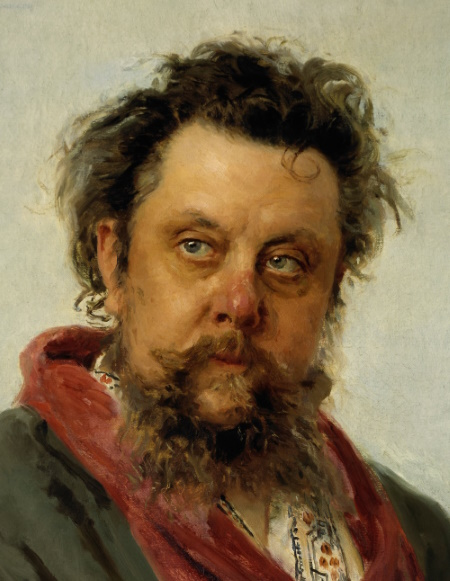
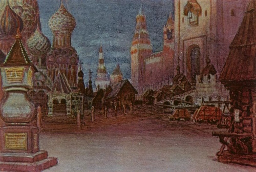

Modest Mussorgsky (1839-1881) was one of Russia's
"Mighty 5" of traditional Russian classical composers. He along with the other 4 in his group wrote music based off of Russian folklore along with other national themes and strove away from traditional Western conventions of music during the Romantic Period.

